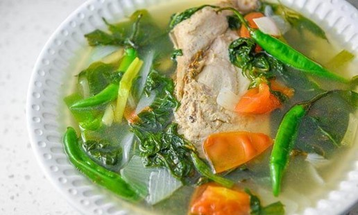

Tinolang Isda
What is Tinolang Isda?
Tinolang Isda or Fish in Ginger Broth is a type of Filipino clear soup dish wherein fish such as Tuna is cooked in a broth composed of ginger, lemongrass and other vegetables. It is a simple dish that can be enjoyed during dinner with the entire family.
Ingredients
2 lbs. Tuna jaw panga
1 to 2 cups hot pepper leaves dahon ng sili
1 bunch scallions sliced in 3 inch pieces (dahon ng sibuyas)
2 plum tomato sliced in wedges (optional)
3 to 5 pieces long green pepper siling pansigang
1 medium yellow onion sliced
3 thumbs ginger peeled and sliced into pieces
1 stalk lemongrass
1 piece Knorr Fish Bouillon fish cub
5 cups water
3 tablespoons fish sauce patis
Instructions / How to Cook
1. Pour water in a soup pot. Let boil.
2. Add ginger, tomato, and onion. Let the water reboil.
3. Add-in the lemongrass. Cover and boil for 5 to 8 minutes.
4. Gently slide-in the Tuna. Cover and cook for 12 to 15 minutes.
5. Add the fish cube and then stir. Cover and continue to cook between low to medium heat for 2 minutes.
6. Add the hot pepper leaves, scallions, long green pepper, and fish sauce. Stir and cook for 3 minutes.
7. Transfer to a serving plate. Serve with rice.